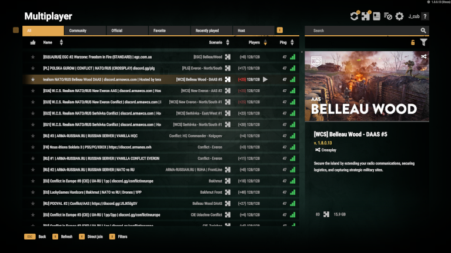
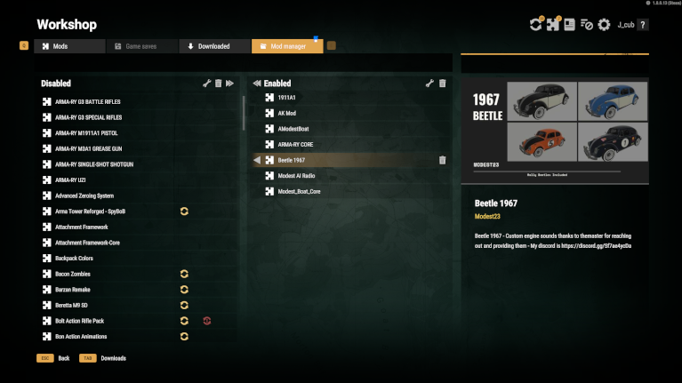
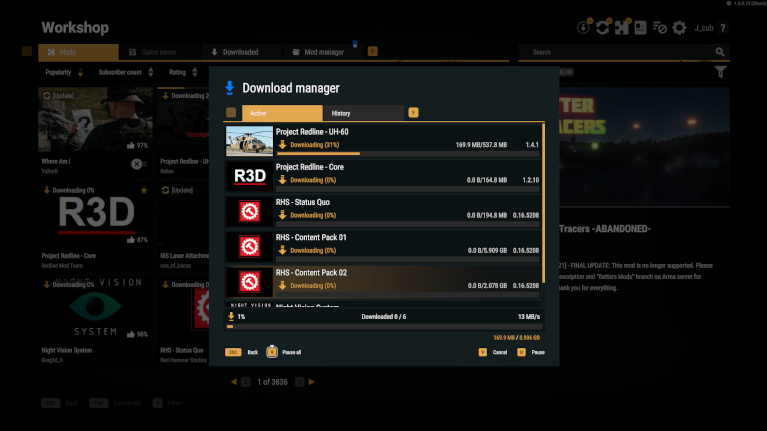

Arma Reforger - Bohemia Interactive



2020/8 - 2024/8
Arma Reforger is a recent title in the Arma milsim series. It was my first big game I was involved in where my domain was UI scripting. I have worked on multiplayer and workshop menus. Both give players seamless access to mods directly inside the game.
In Server browser players can find and join servers. Arma has a rich modding community and there are plenty of servers with various mods to play. The browser automatically downloads required mods so players can join the game without any friction.
For Workshop I’ve added several improvements like download manager and advanced mod manager. Download manager handles downloading, provides info about progress or detects mod updates. Download manager. Mod manager gives a better overview of downloaded mods and tools to set up mods on a custom server.
The majority of features were built in cooperation with UI designer and backend programmer. I served as a connecting element, creating layouts based on designs and giving them functionality with scripts.
Other involved features: LAN menu, UI widget library, Radial menu, Game saves sharing, Game Master maintenance